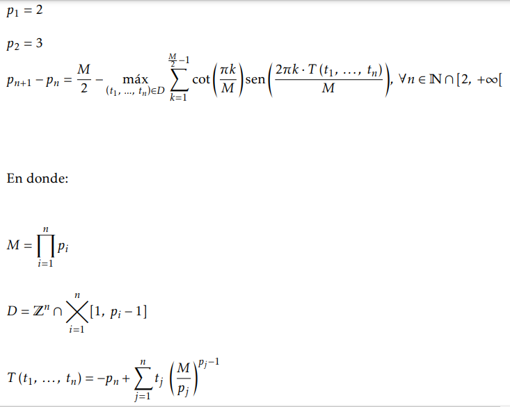

Solucionario: Introducción a la Teoría Analítica de Números (Tom M. Apostol)
Autor: Msc. Oscar Gustavo Carranza Tejada

Acerca del autor: Este solucionario es un esfuerzo analítico desarrollado por el Msc. Oscar Gustavo Carranza Tejada, matemático y consultor independiente radicando en El Salvador. Con formación avanzada que incluye una Maestría en Inteligencia Artificial y Big Data, y especialización en Didáctica de la Matemática, el objetivo de este proyecto es ofrecer demostraciones rigurosas y claras para la comunidad académica y estudiantes de ciencias exactas.